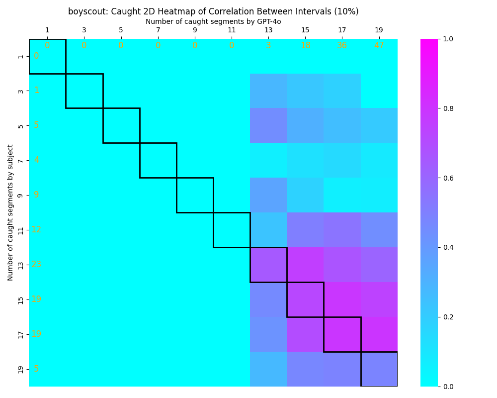

Caught gpt4o vs human 4 plots
See code at
tools/sort-caught-2d-histogram.py
and href="https://github.com/Ilyashn972/llm-narrative-analysis/blob/main/experiments/c_vs_average_caught.py"> experiments/c_vs_average_caught.py
Table of Contents
Schissel v1 Pool
Schissel v2 Lake
Boy Scout
Triplett v1 Rookie
Triplett v2 Cat Lady
Hester v1 Park
Hester v2 Church
Panic
Do Something
Bear
Stein
Costa
Schissel v1 Pool
Schissel v2 Lake
BoyScout

Triplett v1 Rookie
Triplett v2 Cat Lady
Hester v1 Park
Hester v2 Church
Panic
Do Something
Bear
Stein
Costa